# @title
!pip install --quiet scanpy python-igraph leidenalg harmonypy
!pip install --quiet scikit-image
Exercise Solution: A Multi-Sample scRNA-seq Analysis with Scanpy
Written by Maya Caskey
This notebook is the solution to the workshop exercise: repeat the workflow from An Example scRNA-seq Workflow on a dataset with more than one sample.
We use batch 2 of GSE96583 from Kang et al., 2018. Peripheral blood mononuclear cells (PBMCs) from 8 donors were pooled and split into two samples:
| Sample | GEO accession | Condition |
|---|---|---|
ctrl |
GSM2560248 | Unstimulated control |
stim |
GSM2560249 | Stimulated with interferon-β (IFN-β) for 6 hours |
Each sample was run on a 10x Genomics Chromium (v1 chemistry) lane. Because cells from 8 people were pooled, the authors used each cell’s genotype (with their tool demuxlet) to work out which donor it came from and to find doublets made of cells from two different donors. We use those labels at the end to make pseudobulk samples per donor.
NoteWhere the count matrices come from
GEO only provides cell-filtered matrices for this study, so we pre-built unfiltered matrices by running kb count (10x v1, GRCh38) on the reads from the original BAM files deposited on SRA. They are produced in the same way as the matrix in the single-sample workflow, so every QC step applies. The script that builds them is gse96583_prep.py.
This solution follows the same steps as the single-sample workflow, with the changes needed for multiple samples:
- Load the count matrices (pseudoalignment has already been done for you)
- Quality control, per sample
- Cell filtering, per sample, then combining samples and filtering genes
- Normalization and variance stabilization
- Dimensionality reduction and batch correction with Harmony
- Clustering and visualization
- Cell type annotation
- Preparing pseudobulk counts for differential expression
Initial Set-Up
Install Python Packages
# Import packages
import anndata
import os
import matplotlib
import matplotlib.pyplot as plt
from matplotlib_inline.backend_inline import set_matplotlib_formats
import numpy as np
import pandas as pd
import scanpy as sc
from scipy import sparse
matplotlib.rcParams.update({'font.size': 12})
set_matplotlib_formats('retina')import warnings
warnings.filterwarnings('ignore')Download the count matrices
We download one unfiltered count matrix per sample, plus the authors’ per-cell metadata from GEO, which records each cell’s donor, the demuxlet doublet call and the authors’ cell type label.
# TODO: replace with the URL where the pre-built h5ad files are hosted
DATA_URL = "https://REPLACE-WITH-HOSTING-URL"
!wget -nc -q {DATA_URL}/GSE96583_ctrl_unfiltered.h5ad
!wget -nc -q {DATA_URL}/GSE96583_stim_unfiltered.h5ad
!wget -nc -q https://ftp.ncbi.nlm.nih.gov/geo/series/GSE96nnn/GSE96583/suppl/GSE96583_batch2.total.tsne.df.tsv.gzStep 1: Load the Count Matrices
We load each sample into its own AnnData object and keep them in a dictionary, so we can run the same QC code on each one with a for loop. These are the same kind of cells x genes matrices that kb count produced in the single-sample workflow, with the gene names already stored in adata.var["gene_names"].
We also add each cell’s condition and the authors’ metadata. The authors’ barcodes end in -1, which we remove so they match the barcodes from kb. Barcodes the authors did not call as cells, including the empty droplets, get missing values.
metadata = pd.read_csv("GSE96583_batch2.total.tsne.df.tsv.gz", sep="\t")
metadata.index = metadata.index.str.replace("-1", "")
metadata.head()| tsne1 | tsne2 | ind | stim | cluster | cell | multiplets | |
|---|---|---|---|---|---|---|---|
| AAACATACAATGCC | -4.277833 | -19.294709 | 107 | ctrl | 5 | CD4 T cells | doublet |
| AAACATACATTTCC | -27.640373 | 14.966629 | 1016 | ctrl | 9 | CD14+ Monocytes | singlet |
| AAACATACCAGAAA | -27.493646 | 28.924885 | 1256 | ctrl | 9 | CD14+ Monocytes | singlet |
| AAACATACCAGCTA | -28.132584 | 24.925484 | 1256 | ctrl | 9 | CD14+ Monocytes | doublet |
| AAACATACCATGCA | -10.468194 | -5.984389 | 1488 | ctrl | 3 | CD4 T cells | singlet |
def load_sample(path, condition):
adata = anndata.read_h5ad(path)
adata.obs["condition"] = condition
# The same barcode can occur in both samples, so match on condition too
meta = metadata[metadata["stim"] == condition].reindex(adata.obs_names)
adata.obs["donor"] = meta["ind"].astype("Int64").astype(str).values
adata.obs["demuxlet_call"] = meta["multiplets"].values
adata.obs["author_cell_type"] = meta["cell"].values
return adata
samples = {
"ctrl": load_sample("GSE96583_ctrl_unfiltered.h5ad", "ctrl"),
"stim": load_sample("GSE96583_stim_unfiltered.h5ad", "stim"),
}
for name, ad in samples.items():
print(name, ad.shape)ctrl (389258, 39546)
stim (493849, 39546)Step 2: Basic Quality Control (per sample)
Important
QC and cell filtering are done on each sample separately. Samples can differ in sequencing depth and quality, so a threshold that suits one sample may be wrong for another.
Test for Library Saturation
fig, axes = plt.subplots(1, 2, figsize=(14, 6), sharex=True, sharey=True)
for ax, (name, ad) in zip(axes, samples.items()):
x = np.asarray(ad.X.sum(axis=1))[:, 0]
y = np.asarray((ad.X > 0).sum(axis=1))[:, 0]
ax.scatter(x, y, color="green", alpha=0.1, s=5)
ax.set_xscale("log")
ax.set_yscale("log", nonpositive="clip")
ax.set_xlabel("UMI Counts")
ax.set_ylabel("Genes Detected")
ax.set_title(name)
plt.show()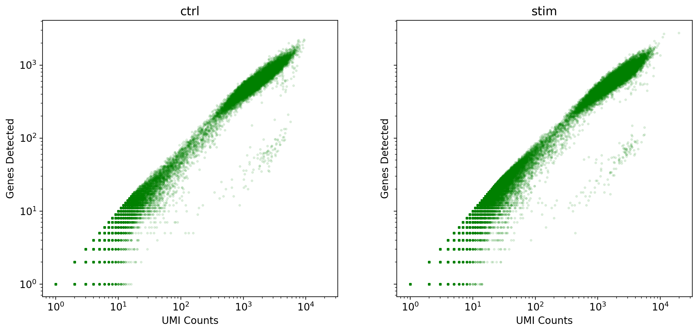
In both samples, the number of genes detected keeps rising with UMI counts, so neither library is saturated. The two samples look very similar, which is what we expect: they come from the same pool of cells and were processed together.
Examine the Knee Plot
Each sample gets its own knee plot and its own UMI cutoff. Look for the point where the curve bends sharply downward, and set the cutoff for each sample there.
cutoffs = {"ctrl": 300, "stim": 300}
fig, axes = plt.subplots(1, 2, figsize=(16, 6), sharex=True, sharey=True)
for ax, (name, ad) in zip(axes, samples.items()):
knee = np.sort(np.asarray(ad.X.sum(axis=1)).flatten())[::-1]
num_cells = (knee > cutoffs[name]).sum()
ax.loglog(knee, np.arange(len(knee)), linewidth=5, color="g")
ax.axvline(x=cutoffs[name], linewidth=3, color="k")
ax.axhline(y=num_cells, linewidth=3, color="k")
ax.set_xlabel("UMI Counts")
ax.set_ylabel("Set of Barcodes")
ax.set_title(f"{name}: {num_cells:,} cells above {cutoffs[name]} UMIs")
ax.grid(True, which="both")
plt.show()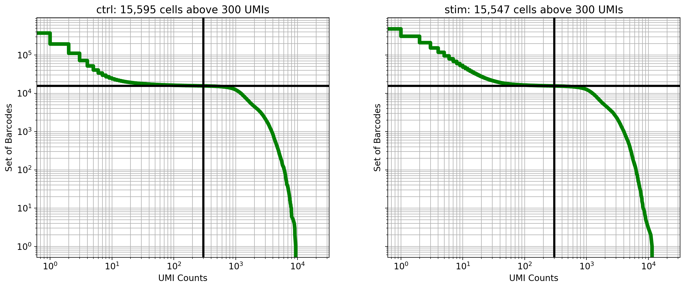
Both samples have a clear knee. About 15,500 barcodes per sample have hundreds to thousands of UMIs (cells), and the curve then drops steeply to hundreds of thousands of barcodes with only a few UMIs each (empty droplets). A cutoff of 300 UMIs falls on the flat part of the curve, between these two groups, for both samples.
This matches the experiment: about 15,000 cells were loaded per lane.
Step 3: Cell and Gene Filtering
Filter low-quality cells (per sample)
As in the single-sample workflow, we keep barcodes above each sample’s knee-plot cutoff that also have at least 200 detected genes.
for name, ad in samples.items():
n_before = ad.n_obs
sc.pp.filter_cells(ad, min_counts=cutoffs[name])
sc.pp.filter_cells(ad, min_genes=200)
print(f"{name}: kept {ad.n_obs:,} of {n_before:,} barcodes")ctrl: kept 15,334 of 389,258 barcodes
stim: kept 15,253 of 493,849 barcodesFilter Multiplets with Scrublet (per sample)
Scrublet must be run on each sample separately, because each 10x lane has its own doublets.
The expected doublet rate depends on how many cells were loaded. These lanes were deliberately over-loaded with about 15,000 cells each, because demuxlet can find doublets made of cells from two different donors. At this loading, the expected doublet rate is about 10%, much higher than the 0.8% we used for the 1,000-cell dataset.
for name, ad in samples.items():
sc.pp.scrublet(ad, expected_doublet_rate=0.1, random_state=0)
print(f"{name}: automatic threshold = {ad.uns['scrublet']['threshold']:.2f}, "
f"predicted {ad.obs['predicted_doublet'].sum():,} doublets")ctrl: automatic threshold = 0.27, predicted 1,353 doublets
stim: automatic threshold = 0.24, predicted 1,556 doubletsScrublet chooses its threshold automatically, by looking for a dip between the scores of real cells and the scores of its simulated doublets. It is worth plotting these distributions to check that the threshold (black line) looks sensible:
for name, ad in samples.items():
sc.pl.scrublet_score_distribution(ad)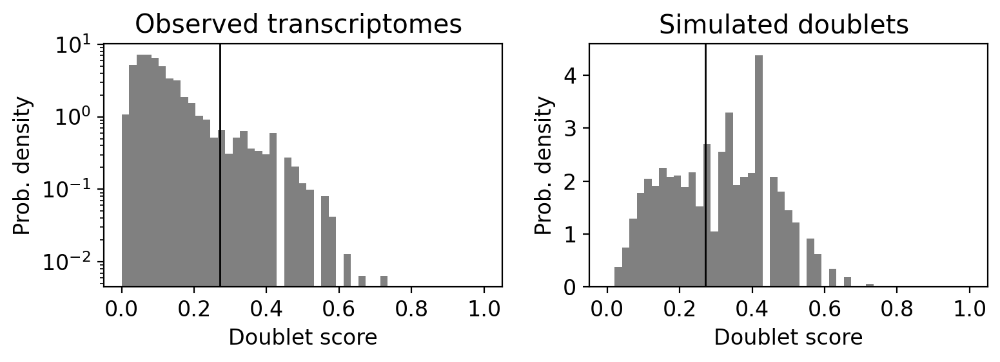
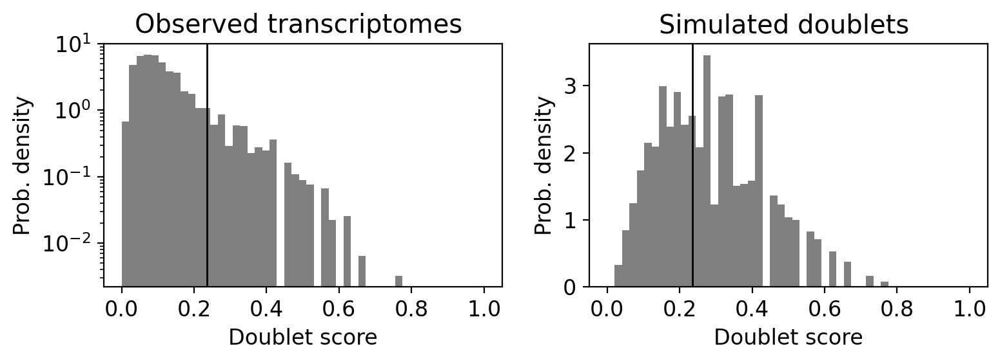
For each sample, the left panel shows the scores of the real cells and the right panel shows the simulated doublets. In both samples the automatic threshold falls after the main peak of real cells, and it flags about 9–10% of cells, close to the expected rate. We keep Scrublet’s predictions.
Tip
If the simulated doublet scores do not form two clear peaks, the automatic threshold can end up in the wrong place and flag almost no cells. In that case, set the threshold yourself from this plot, for example with ad.obs["predicted_doublet"] = ad.obs["doublet_score"] > 0.25.
Filtering Cells by Mitochondrial Content (per sample)
for name, ad in samples.items():
ad.var["is_mito"] = ad.var["gene_names"].str.startswith("MT-")
mito_counts = np.asarray(ad[:, ad.var["is_mito"]].X.sum(axis=1)).flatten()
total_counts = np.asarray(ad.X.sum(axis=1)).flatten()
ad.obs["percent_mito"] = mito_counts / total_counts * 100
ad.obs["n_counts"] = total_countsfig, axes = plt.subplots(1, 2, figsize=(14, 5), sharey=True)
for ax, (name, ad) in zip(axes, samples.items()):
sc.pl.scatter(ad, x="n_counts", y="percent_mito", ax=ax, show=False, title=name)
plt.show()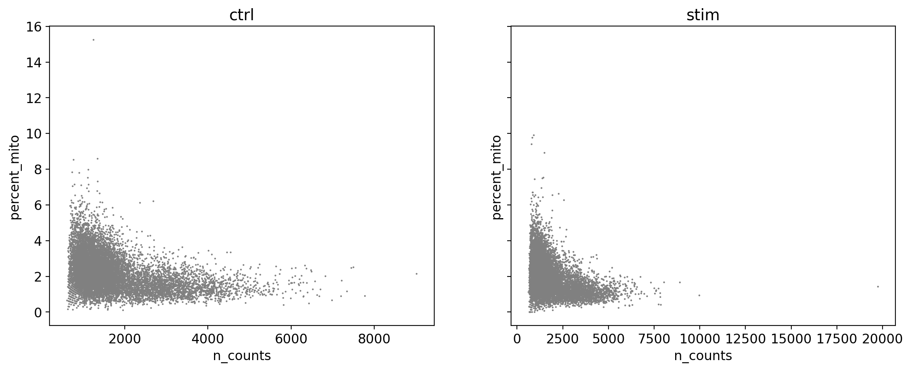
Mitochondrial content is low in both samples. Almost all cells have less than 6% mitochondrial counts, with a few cells above that. We set the threshold to 6%, which removes only those outliers.
mito_threshold = 6
for name in samples:
ad = samples[name]
samples[name] = ad[ad.obs["percent_mito"] < mito_threshold].copy()
print(f"{name}: kept {samples[name].n_obs:,} of {ad.n_obs:,} cells")ctrl: kept 11,793 of 11,828 cells
stim: kept 11,385 of 11,409 cellsCombine the samples
Now that each sample has been filtered on its own, we combine them into one AnnData object with anndata.concat. The label="sample" argument adds an obs column recording which sample each cell came from. The same barcode can appear in both samples, so index_unique="-" adds the sample name to each barcode to keep cell names unique.
adata = anndata.concat(samples, label="sample", index_unique="-", merge="same")
adataAnnData object with n_obs × n_vars = 23178 × 39546
obs: 'condition', 'donor', 'demuxlet_call', 'author_cell_type', 'n_counts', 'n_genes', 'doublet_score', 'predicted_doublet', 'percent_mito', 'sample'
var: 'gene_names', 'is_mito'Before filtering genes or normalizing, we save a copy of the raw counts for all filtered cells. We will need these later to build pseudobulk samples (Step 8).
adata_raw = adata.copy()Filter out genes that are not present in any cells
Gene filtering is done after combining the samples, so that both samples keep the same set of genes.
sc.pp.filter_genes(adata, min_cells=3)
adataAnnData object with n_obs × n_vars = 23178 × 18693
obs: 'condition', 'donor', 'demuxlet_call', 'author_cell_type', 'n_counts', 'n_genes', 'doublet_score', 'predicted_doublet', 'percent_mito', 'sample'
var: 'gene_names', 'is_mito', 'n_cells'Visualizing count distributions
sc.pl.violin(adata, ["n_genes", "n_counts"], groupby="sample", jitter=0.4, multi_panel=True)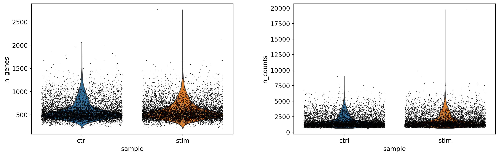
Step 4: Normalization and Variance Stabilization
sc.pp.normalize_total(adata, target_sum=1e6)
sc.pp.log1p(adata)Highly Variable Gene (HVG) Selection
With multiple samples, we pass batch_key="sample". Highly variable genes are then found in each sample separately and combined, so that genes are not called variable just because they differ between samples.
sc.pp.highly_variable_genes(adata, min_mean=0.01, max_mean=8, min_disp=1, n_bins=20, flavor="seurat", batch_key="sample")
sc.pl.highly_variable_genes(adata)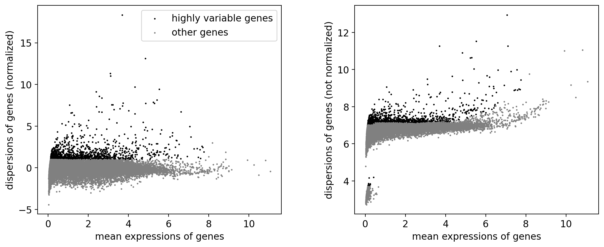
Step 5: Dimensionality Reduction and Batch Correction
sc.pp.pca(adata, mask_var="highly_variable")
sc.pl.pca_variance_ratio(adata, n_pcs=50, log=True)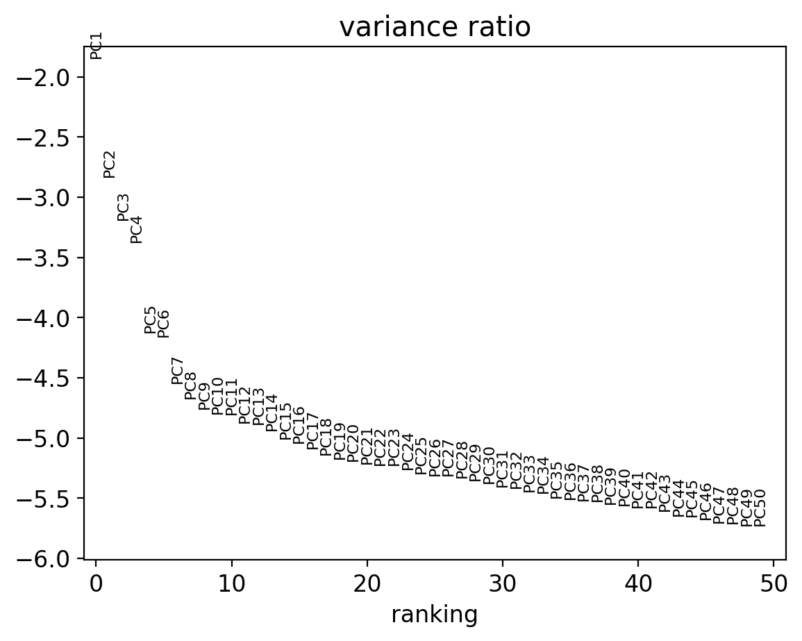
This dataset has more cells and more cell types than the 1,000-cell example, so we use 20 principal components instead of 10. The variance ratio plot above levels off at around 20 PCs.
Do the samples cluster together?
Before clustering, we check whether cells from the two samples overlap. We build the neighbor graph and a UMAP from the uncorrected PCA and color the cells by condition.
sc.pp.neighbors(adata, n_neighbors=30, n_pcs=20)
sc.tl.umap(adata, random_state=0)
fig, ax = plt.subplots(figsize=(10, 7))
sc.pl.umap(adata, color="condition", ax=ax, title="Before batch correction")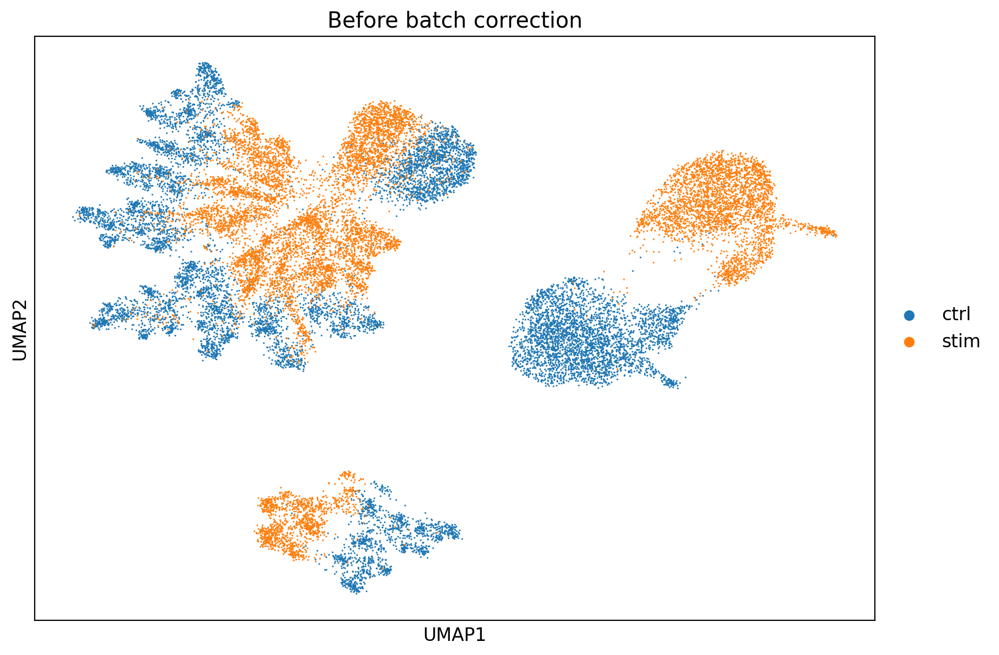
The control and stimulated cells form separate groups. IFN-β changes the expression of hundreds of genes in every cell type, so a stimulated monocyte ends up closer to a stimulated T cell than to a control monocyte. If we clustered now, many clusters would mix cell type and condition.
Our goal at this stage is to find cell types that are shared by both conditions, so we use Harmony to correct the PCA embedding for the sample effect.
Important
Harmony only changes the PCA embedding (stored as X_pca_harmony). It does not change the expression values. We use the corrected embedding to cluster and annotate cells, then go back to the raw counts to test for differences between conditions (Step 8). This way the batch correction does not remove the biological effect we want to measure.
Note
Scanpy provides a wrapper, sc.external.pp.harmony_integrate, but recent versions of harmonypy return the corrected embedding in a different shape than some versions of Scanpy expect. To avoid this, we call harmonypy directly and store the result in adata.obsm["X_pca_harmony"] ourselves.
import harmonypy
harmony = harmonypy.run_harmony(adata.obsm["X_pca"], adata.obs, "sample", random_state=0, verbose=False)
Z = np.asarray(harmony.Z_corr)
# Store as cells x PCs (older harmonypy versions return PCs x cells)
adata.obsm["X_pca_harmony"] = Z if Z.shape[0] == adata.n_obs else Z.TStep 6: Clustering and Visualization
We build the neighbor graph from the Harmony embedding (use_rep="X_pca_harmony") and then cluster and visualize as before.
sc.pp.neighbors(adata, n_neighbors=30, n_pcs=20, use_rep="X_pca_harmony")
sc.tl.leiden(adata, resolution=1.0, flavor="igraph", n_iterations=2, random_state=0)
sc.tl.umap(adata, random_state=0)fig, axes = plt.subplots(1, 2, figsize=(18, 7))
sc.pl.umap(adata, color="condition", ax=axes[0], show=False, title="After batch correction")
sc.pl.umap(adata, color="leiden", ax=axes[1], show=False, legend_loc="on data")
plt.show()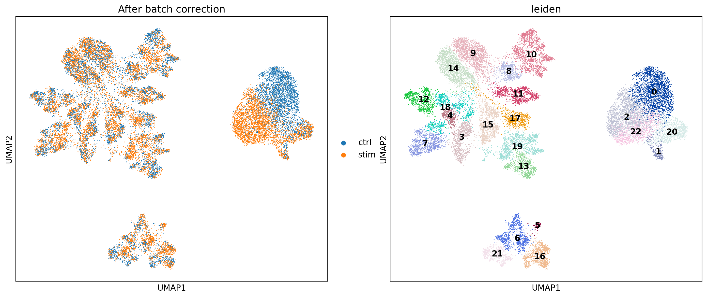
After Harmony, the T cells, NK cells and B cells from the two conditions overlap. The monocytes still partly separate by condition, because IFN-β changes monocytes far more than any other cell type, and Harmony cannot (and should not) remove all of a strong biological effect. Some monocyte clusters therefore come mostly from one condition, as the table below shows. This is fine: we will give those clusters the same cell type label.
pd.crosstab(adata.obs["leiden"], adata.obs["condition"])| condition | ctrl | stim |
|---|---|---|
| leiden | ||
| 0 | 2278 | 83 |
| 1 | 125 | 168 |
| 2 | 322 | 1751 |
| 3 | 435 | 426 |
| 4 | 229 | 170 |
| 5 | 35 | 57 |
| 6 | 441 | 518 |
| 7 | 449 | 491 |
| 8 | 294 | 263 |
| 9 | 830 | 775 |
| 10 | 860 | 700 |
| 11 | 503 | 427 |
| 12 | 479 | 330 |
| 13 | 427 | 270 |
| 14 | 860 | 883 |
| 15 | 523 | 601 |
| 16 | 420 | 461 |
| 17 | 310 | 362 |
| 18 | 429 | 429 |
| 19 | 422 | 710 |
| 20 | 498 | 531 |
| 21 | 391 | 243 |
| 22 | 233 | 736 |
Step 7: Cell Type Annotation
Annotation by Differential Expression
nuisance_genes = ["RPS", "RPL", "MALAT1", "MT-"]
adata = adata[:, ~adata.var["gene_names"].str.startswith(tuple(nuisance_genes))].copy()
sc.tl.rank_genes_groups(adata, gene_symbols="gene_names", groupby="leiden", method="wilcoxon")
sc.pl.rank_genes_groups(adata, n_genes=15, gene_symbols="gene_names")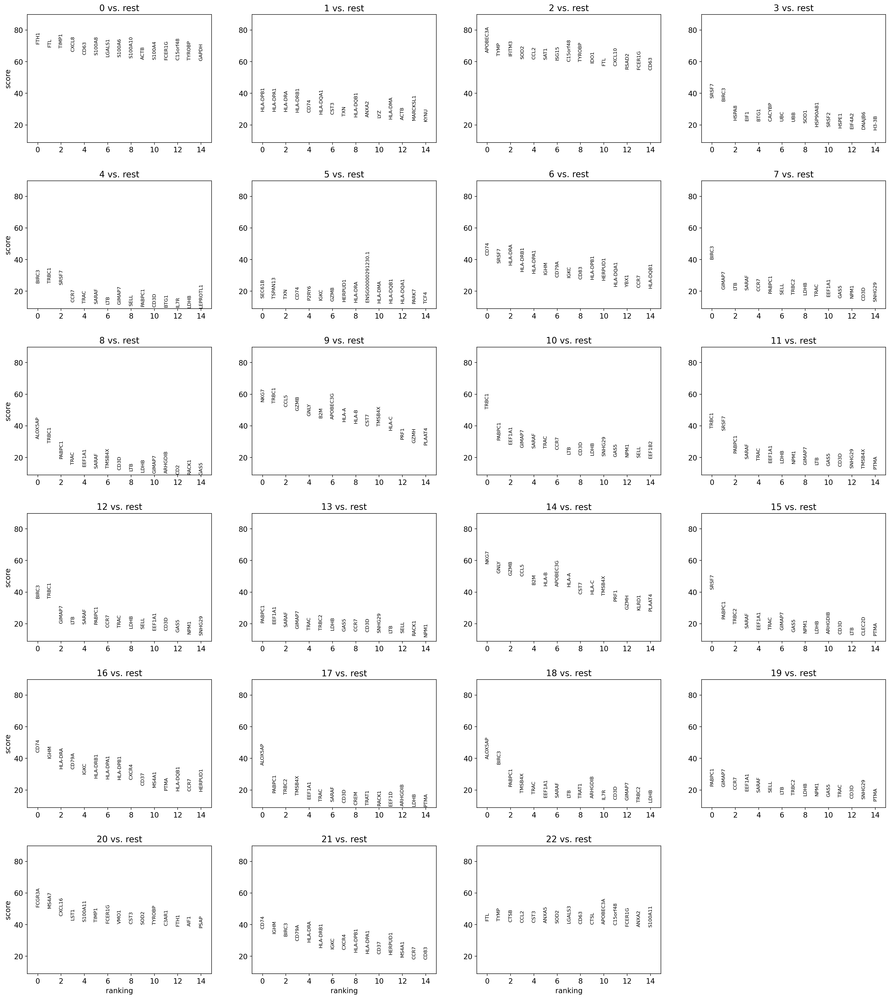
sc.tl.dendrogram(adata, groupby="leiden", key_added="dea_leiden")
sc.pl.rank_genes_groups_dotplot(
adata, groupby="leiden", gene_symbols="gene_names", standard_scale="var", n_genes=5, dendrogram="dea_leiden"
)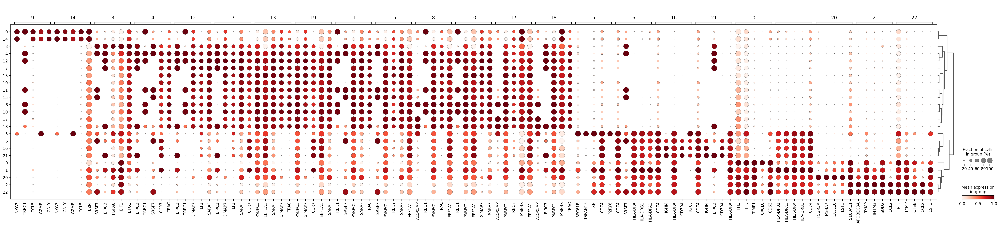
Annotation by Marker Gene Expression
We use the same PBMC marker list as in the single-sample workflow.
marker_genes = {
"CD14+ Mono": ["FCN1", "CD14", "LYZ"],
"CD16+ Mono": ["TCF7L2", "FCGR3A", "LYN", "MS4A7"],
"DC": ["FCER1A", "CST3"],
"NK": ["GNLY", "NKG7", "CD247", "FCER1G", "TYROBP", "KLRG1", "FCGR3A"],
"B cells": ["MS4A1", "IGHD", "IGHM"],
"CD4+ T": ["CD4", "IL7R", "TRBC2"],
"CD8+ T": ["CD8A", "CD8B", "GZMK", "GZMA", "GZMB", "CCL5"],
"pan T": ["CD3D", "CD3E", "CD3G"]
}
sc.pl.dotplot(adata, marker_genes, gene_symbols="gene_names", groupby="leiden", standard_scale="var")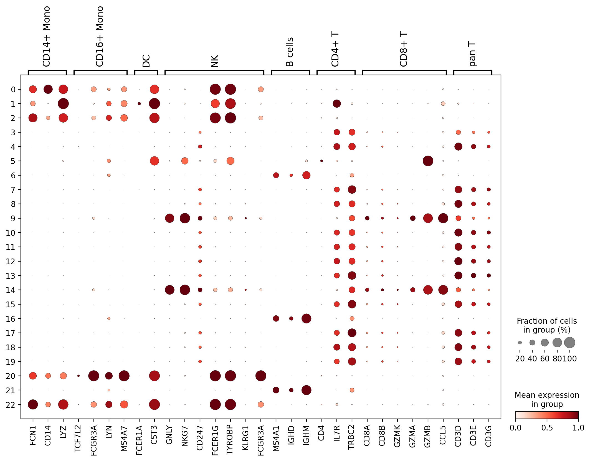
TipMarkers can change between conditions
Some markers respond to the treatment itself. For example, IFN-β strongly lowers CD14 in monocytes, so stimulated CD14+ monocytes have little CD14 RNA. Use several markers per cell type, and check the dotplot split by condition:
sc.pl.dotplot(adata, marker_genes["CD14+ Mono"] + marker_genes["CD16+ Mono"], gene_symbols="gene_names",
groupby=["leiden", "condition"], standard_scale="var")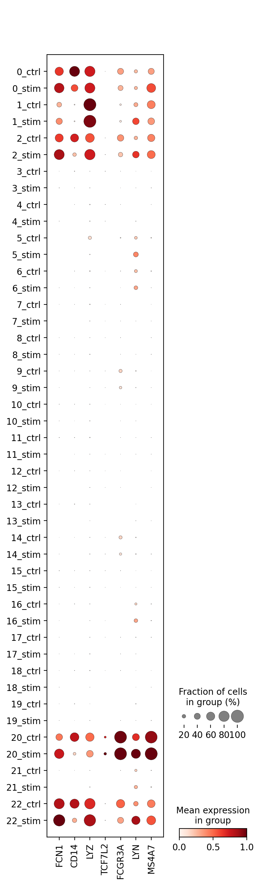
From the two dotplots, we can annotate the clusters:
- CD14+ monocytes (clusters 0, 2 and 22): FCN1 and LYZ. Cluster 0 is mostly control cells and has high CD14, while clusters 2 and 22 are mostly stimulated cells with low CD14. These are the same cell type in two conditions.
- CD16+ monocytes (cluster 20): FCGR3A and MS4A7.
- Dendritic cells (cluster 1): CST3 and FCER1A, without the monocyte markers FCN1 and CD14.
- Plasmacytoid dendritic cells (cluster 5): a small cluster with high GZMB and CST3 but no T cell or NK cell markers. This combination is typical of pDCs, which are not in our marker list. This shows why the differential expression results are useful alongside a marker list.
- B cells (clusters 6, 16 and 21): MS4A1, IGHM and IGHD.
- NK cells and CD8+ T cells (clusters 9 and 14): GNLY, NKG7, GZMB and CCL5, with CD8A in some cells. At this resolution NK cells and CD8+ T cells cluster together, so we label them together.
- CD4+ T cells (all other clusters): CD3D/E/G, IL7R and TRBC2, without the cytotoxic markers. There are many small CD4+ T cell clusters because Leiden at resolution 1.0 splits this large, fairly uniform population. We give them all the same label.
Note
Leiden clustering can give different cluster numbers on different computers or package versions. If your clusters do not match the numbers below, use the dotplots to make your own annotation dictionary.
annotation = {
"0": "CD14+ Monocytes",
"1": "Dendritic Cells",
"2": "CD14+ Monocytes",
"3": "CD4+ T Cells",
"4": "CD4+ T Cells",
"5": "Plasmacytoid DCs",
"6": "B Cells",
"7": "CD4+ T Cells",
"8": "CD4+ T Cells",
"9": "NK / CD8+ T Cells",
"10": "CD4+ T Cells",
"11": "CD4+ T Cells",
"12": "CD4+ T Cells",
"13": "CD4+ T Cells",
"14": "NK / CD8+ T Cells",
"15": "CD4+ T Cells",
"16": "B Cells",
"17": "CD4+ T Cells",
"18": "CD4+ T Cells",
"19": "CD4+ T Cells",
"20": "CD16+ Monocytes",
"21": "B Cells",
"22": "CD14+ Monocytes",
}
adata.obs["cell_type"] = adata.obs["leiden"].map(annotation).astype("category")fig, ax = plt.subplots(figsize=(10, 7))
sc.pl.umap(adata, color="cell_type", ax=ax)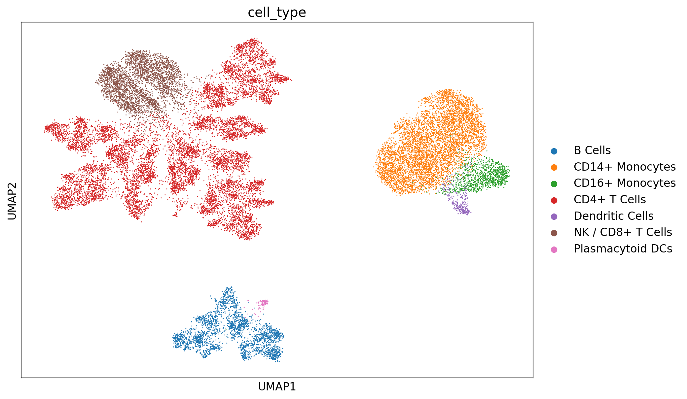
Step 8: Preparing Pseudobulk Data for Differential Expression
Now we can ask how a cell type responds to IFN-β. As explained in the single-sample workflow, single cells are not independent replicates. Instead, we sum the raw counts for each cell type x condition x donor combination.
Having 8 donors in this dataset is useful: each donor gives one pseudobulk sample per condition, so we get 8 control and 8 stimulated replicates for each cell type. Because each donor appears in both conditions, the comparison is paired, and the donor can be included as a blocking factor in edgeR.
First we copy the cell type labels onto the raw count matrix we saved before gene filtering.
adata_raw.obs["cell_type"] = adata.obs["cell_type"]
pseudobulk = sc.get.aggregate(adata_raw, by=["cell_type", "condition", "donor"], func="sum")
pseudobulkAnnData object with n_obs × n_vars = 112 × 39546
obs: 'cell_type', 'condition', 'donor'
var: 'gene_names', 'is_mito'
layers: 'sum'It is worth checking how many cells went into each pseudobulk sample. Samples built from only a few cells are noisy.
n_cells = adata_raw.obs.groupby(["cell_type", "condition", "donor"], observed=True).size()
n_cells.unstack("donor")| donor | 101 | 107 | 1015 | 1016 | 1039 | 1244 | 1256 | 1488 | |
|---|---|---|---|---|---|---|---|---|---|
| cell_type | condition | ||||||||
| B Cells | ctrl | 106 | 42 | 439 | 120 | 26 | 106 | 206 | 207 |
| stim | 131 | 55 | 341 | 111 | 36 | 85 | 198 | 265 | |
| CD14+ Monocytes | ctrl | 207 | 211 | 809 | 380 | 115 | 418 | 392 | 301 |
| stim | 257 | 165 | 663 | 329 | 156 | 285 | 368 | 347 | |
| CD16+ Monocytes | ctrl | 72 | 25 | 160 | 78 | 16 | 38 | 43 | 66 |
| stim | 104 | 23 | 150 | 83 | 24 | 14 | 53 | 80 | |
| CD4+ T Cells | ctrl | 331 | 175 | 898 | 461 | 189 | 1099 | 1014 | 1193 |
| stim | 400 | 188 | 730 | 362 | 280 | 832 | 933 | 1454 | |
| Dendritic Cells | ctrl | 15 | 6 | 21 | 13 | 9 | 21 | 17 | 23 |
| stim | 23 | 14 | 24 | 16 | 4 | 31 | 23 | 33 | |
| NK / CD8+ T Cells | ctrl | 96 | 45 | 286 | 598 | 35 | 131 | 353 | 146 |
| stim | 144 | 51 | 247 | 584 | 35 | 116 | 303 | 178 | |
| Plasmacytoid DCs | ctrl | 2 | 1 | 7 | 1 | 1 | 5 | 6 | 12 |
| stim | 8 | 1 | 4 | 2 | 13 | 2 | 12 | 15 |
Export CD14+ monocyte pseudobulk counts
Monocytes have one of the strongest responses to IFN-β, so we export their pseudobulk counts as an example. The counts matrix has one row per gene and one column per sample, the same layout as the bulk RNA-seq count matrix. We also save a metadata table describing each column.
cell_type = "CD14+ Monocytes"
pb = pseudobulk[pseudobulk.obs["cell_type"] == cell_type]
sample_names = (pb.obs["condition"].astype(str) + "_" + pb.obs["donor"].astype(str)).values
counts = pd.DataFrame(pb.layers["sum"].T, index=pb.var_names, columns=sample_names)
counts.insert(0, "gene_name", adata_raw.var.loc[counts.index, "gene_names"].values)
sample_metadata = pd.DataFrame({
"sample": sample_names,
"condition": pb.obs["condition"].values,
"donor": pb.obs["donor"].values,
"n_cells": [n_cells[(cell_type, c, d)] for c, d in zip(pb.obs["condition"], pb.obs["donor"])],
})
counts.to_csv("pseudobulk_CD14_mono_counts.csv")
sample_metadata.to_csv("pseudobulk_CD14_mono_metadata.csv", index=False)
print(counts.shape)
sample_metadata(39546, 17)| sample | condition | donor | n_cells | |
|---|---|---|---|---|
| 0 | ctrl_101 | ctrl | 101 | 207 |
| 1 | ctrl_107 | ctrl | 107 | 211 |
| 2 | ctrl_1015 | ctrl | 1015 | 809 |
| 3 | ctrl_1016 | ctrl | 1016 | 380 |
| 4 | ctrl_1039 | ctrl | 1039 | 115 |
| 5 | ctrl_1244 | ctrl | 1244 | 418 |
| 6 | ctrl_1256 | ctrl | 1256 | 392 |
| 7 | ctrl_1488 | ctrl | 1488 | 301 |
| 8 | stim_101 | stim | 101 | 257 |
| 9 | stim_107 | stim | 107 | 165 |
| 10 | stim_1015 | stim | 1015 | 663 |
| 11 | stim_1016 | stim | 1016 | 329 |
| 12 | stim_1039 | stim | 1039 | 156 |
| 13 | stim_1244 | stim | 1244 | 285 |
| 14 | stim_1256 | stim | 1256 | 368 |
| 15 | stim_1488 | stim | 1488 | 347 |
These CSV files can be loaded into R and analyzed with edgeR, as in our Bulk RNA-seq Workflow. Because each donor appears in both conditions, use a paired design that includes the donor, for example model.matrix(~ donor + condition).